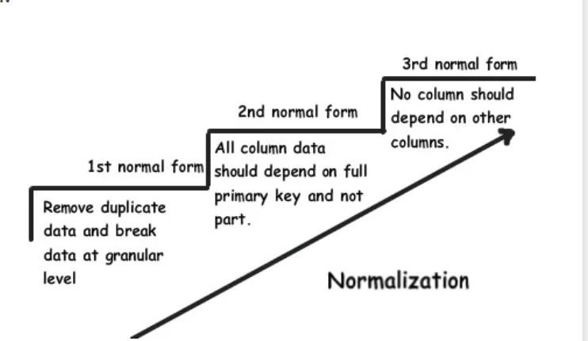
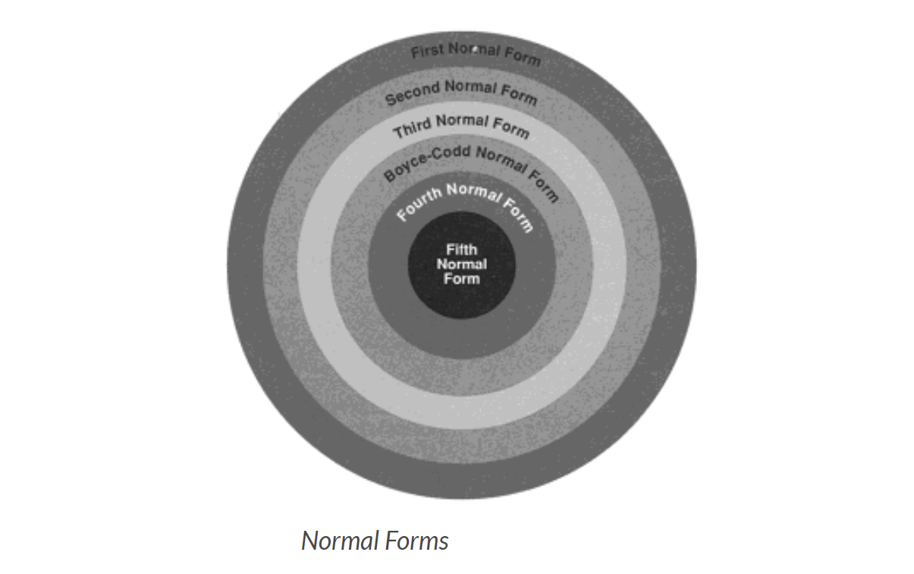

Database blog
6 Steps for Setting Up a Database
1. Define the high level requirements of the enterprise (this step generates a document known as the system requirements specification.)
2. Define a model containing all appropriate types of data and data relationships.
3. Define the integrity constraints on the data.
4. Define the physical level.
5. For each known problem to be solved on a regular basis (e.g., tasks to be carried out by clerks or Web users) define a user interface to carry out the task, and write the necessary application programs to implement the user interface.
6. Create/initialize the database.
Five types of SQL commands

Data Definition Language (DDL)
DDL changes the structure of the table like creating a table, deleting a table, altering a table, etc.
All the command of DDL are auto-committed that means it permanently save all the changes in the database.
Here are some commands that come under DDL:
CREATE:
It is used to create a new table in the database.
- Syntax:
- CREATE TABLE TABLE_NAME (COLUMN_NAME DATATYPES[,....]);
- Example:
- CREATE TABLE EMPLOYEE(Name VARCHAR2(20), Email VARCHAR2(100), DOB DATE);
ALTER:
It is used to alter the structure of the database. This change could be either to modify the characteristics of an existing attribute or probably to add a new attribute.
- Syntax:To add a new column in the table
- ALTER TABLE table_name ADD column_name COLUMN-definition;
- Example:
- ALTER TABLE STU_DETAILS ADD(ADDRESS VARCHAR2(20));
DROP:
It is used to delete both the structure and record stored in the table.
- Syntax:To add a new column in the table
- DROP TABLE table_name;
- Example:
- DROP TABLE EMPLOYEE;
TRUNCATE:
It is used to delete all the rows from the table and free the space containing the table.
- Syntax:
- TRUNCATE TABLE table_name;
- Example:
- TRUNCATE TABLE EMPLOYEE;
Data Manipulation Language (DML)
DML commands are used to modify the database. It is responsible for all form of changes in the database.
The command of DML is not auto-committed that means it can't permanently save all the changes in the database. They can be rollback.
Here are some commands that come under DML: INSERT, UPDATE, DELETE
INSERT:
The INSERT statement is a SQL query. It is used to insert data into the row of a table.
- Syntax:
- 1. INSERT INTO TABLE_NAME 2. (col1, col2, col3,.... col N) 3. VALUES (value1, value2, value3, .... valueN); Or 1. INSERT INTO TABLE_NAME 2. VALUES (value1, value2, value3, .... valueN);
- Example:
- 1. INSERT INTO javatpoint (Author, Subject) VALUES ("Sonoo", "DBMS");
UPDATE:
This command is used to update or modify the value of a column in the table.
- Syntax:
- UPDATE table_name SET [column_name1= value1,...column_nameN = valueN] [WHERE CONDITION]
- Example:
- 1. UPDATE students 2. SET User_Name = 'Sonoo' 3. WHERE Student_Id = '3'
DELETE:
It is used to remove one or more row from a table.
- Syntax:
- DELETE FROM table_name [WHERE condition];
- Example:
- 1. DELETE FROM javatpoint 2. WHERE Author="Sonoo";
Data Control Language (DCL)
DCL commands are used to grant and take back authority from any database user. Here are some commands that come under DCL:
GRANT, REVOKEGRANT:
It is used to give user access privileges to a database.
- Example:
- GRANT SELECT, UPDATE ON MY_TABLE TO SOME_USER, ANOTHER_USER;
REVOKE:
It is used to take back permissions from the user.
Transaction Control Language (TCL)
TCL commands can only use with DML commands like INSERT, DELETE and UPDATE only.
These operations are automatically committed in the database that's why they cannot be used while creating tables or dropping them.
Here are some commands that come under TCL: COMMIT, ROLLBACK, SAVEPOINT
COMMIT:
Commit command is used to save all the transactions to the database.
- Syntax:
- COMMIT;
- Example:
- 1. DELETE FROM CUSTOMERS 2. WHERE AGE = 25; 3. COMMIT;
ROLLBACK:
Rollback: Rollback command is used to undo transactions that have not already been saved to the database.
- Syntax:
- ROLLBACK;
- Example:
- 1. DELETE FROM CUSTOMERS 2. WHERE AGE = 25; 3. ROLLBACK;
SAVEPOINT:
It is used to roll the transaction back to a certain point without rolling back the entire transaction.
- Syntax:
- SAVEPOINT SAVEPOINT_NAME;
Data Query Language(DQL)
DQL is used to fetch the data from the database.
It uses only one command: SELECT
SELECT:
This is the same as the projection operation of relational algebra. It is used to select the attribute based on the condition described by WHERE clause.
- Syntax:
- 1. SELECT expressions
2. FROM TABLES
3. WHERE conditions;
- Example:
- 1. SELECT emp_name 2. FROM employee 3. WHERE age > 20;
Database Normalization with Examples:
Database Normalization is organizing non structured data in to structured data.Database normalization is nothing but organizing the tables and columns of the tables in such way that it should reduce the data redundancy and complexity of data and improves the integrity of data.
Database Normalization is nothing but technique of designing the database in structured way to reduce redundancy and improve data integrity.
Database Normalization is used for following Purpose:
- To Eliminate the redundant or useless data
- To Reduce the complexity of the data
- To Ensure the relationship between tables as well as data in the tables
- To Ensure data dependencies and data is logically stored.
Need Of Database Normalization:
If your database objects are not in structured or normalized way it is difficult to update the database without facing the database loss.Insertion,Updation and deletion are very frequent if data is not normalized.Normalization is part of successful database design.Without Database normalization the database system can be slow,Inaccurate and inefficient.
Real Life Example of data which is not normalized:
Lets take Example of Employee Table:
| Employee ID | Employee Name | City | Department |
| 101 | Amit | Kolhapur | OBIEE,COGNOS |
| 102 | Divya | Indore | COGNOS |
| 103 | Yodhini | Hydrabad | SIEBEL |
| 104 | Amit | Kolhapur | ETL |
If new employee joined company and he or she has not alloted to department.Hence We need to insert nulll value there which leads to insertion Anamoly.
Deletion Anamoly:
If Employee_id 101 has only 1 department and we delete that temparary then Entire student record will be deleted.
To Overcome these kind of issues there is need to use the database normalized forms.When we try to normalize database check following 4 important points:
1.Arrangement of data into logical groups.
2.Minimize the Duplicate data.
3.Organize the data in such way that when modification needed then there should be only one place modification required.
4.User can access and manipulate data quickly and efficiently.
Database Normalization Forms:
There are following Four Normal Forms used in Database Normalization: 
1.First Normal Form
2.Second Normal Form
3.Third Normal Form
4. Boyce-code Normal Form(BCNF)
1.First Normal Form/1st Normal Form:
The first normal form is the normal form of database where data must not contain repeating groups.The database is in First normal form If,
1.It contains only automic values.
Automic values:- The Single cell have only single value
2.Each Record needs to be unique and there are no repeating groups.
Repeating Groups:- Repeating group means a table contains 2 or more values of columns that are closely related.
Example:
Consider following table which is not normalized:
Employee Table:
| Employee No | Employee Name | Department |
| 1 | Amit | OBIEE,ETL |
| 2 | Divya | COGNOS |
| 3 | Rama | Administrator |
To bring it in to first normal form We need to split table into 2 tables.
First table:Employee Table
| Employee No | Employee Name |
| 1 | Amit |
| 2 | Divya |
| 3 | Rama |
Second Table: Department table
| Employee No | Department |
| 1 | OBIEE |
| 1 | ETL |
| 2 | COGNOS |
| 3 | Administrator |
We have divided the table into two different tables and the column of each table is holding the automic values and duplicates also removed.
2.Second Normal Form/2nd Normal Form:
The data is said to be in second normalized form If,
1.It is in First normal form
2.There should not be any partial dependency of any column on primary key.Means the table have concatanated primary key and each attribute in table depends on that concatanated primary key.
3.All Non-key attributes are fully functionally dependent on primary key.If primary is is not composite key then all non key attributes are fully functionally dependent on primary key.
Example:
Let us consider following table which is in first normal form:
| Employee No | Department No | Employee Name | Department |
| 1 | 101 | Amit | OBIEE |
| 2 | 102 | Divya | COGNOS |
| 3 | 101 | Rama | OBIEE |
In above example we can see that department .Here We will see that there is composit key as{ Employee No,Department No}.Employee No is dependent on Employee Name and Department is dependent on Department No.We can split the above table into 2 different tables:
Table 1:Employee_NO table
| Employee No | Department No | Employee Name |
| 1 | 101 | Amit |
| 2 | 102 | Divya |
| 3 | 101 | Rama |
Table 2:Department table
| Department No | Department |
| 101 | OBIEE |
| 102 | COGNOS |
Now we have simplified the table in to second normal form where each entity of table is functionally dependent on primary key.
Third Normal Form/3rd Normal Form:
The database is in Third normal form if it satisfies following conditions:
1.It is in Second normal form
2.There is no transitive functional dependency
Transitive Dependency:
When table 1 is Functionally dependent on table 2. and table 2 is functionally dependent on table 3 then.table 3 is transitively dependent on table 1 via table 2.
Example:
Consider following table:
| Employee No | Salary Slip No | Employee Name | Salary |
| 1 | 0001 | Amit | 50000 |
| 2 | 0002 | Divya | 40000 |
| 3 | 0003 | Rama | 57000 |
In above table Employee No determines the Salary Slip No.And Salary Slip no Determines Employee name.Therefore Employee No determines Employee Name.We have transitive functional dependency so that this structure not satisfying Third Normal Form.
For That we will Split tables into following 2 tables:
Employee table:
| Employee No | Salary Slip No | Employee Name |
| 1 | 0001 | Amit |
| 2 | 0002 | Divya |
| 3 | 0003 | Rama |
Salary Table:
| Salary Slip No | Salary |
| 0001 | 50000 |
| 0002 | 40000 |
| 0003 | 57000 |
Following are 2 Advantages of 3rd normal form:
1.Amount of data duplication is removed because transitive dependency is removed in third normal form.
2.Achieved Data integrity
4.BCNF(Boyce-Codd Normal Form)
BCNF Normal form is higher version of third normal form.This form is used to handle analomies which are not handled in third normal form.BCNF does not allow dependencies between attributes that belongs to candidate keys.It drops restriction of the non key attributes from third normal form.
Third normal form and BCNF are not same if following conditions are true:
1.The table has 2 or more candidate keys
2.At least two of candidate keys are composed of more than 1 attribute
3.The keys are not disjoint.
Example:
Address-> {City,Street,Zip}
Key 1-> {City,Zip}
Key 2->{City,Street}
No non key attribute hence this example is of 3 NF.
{City,Street}->{zip}
{Zip}->{City}
There is dependency between attributes belonging to key.Hence this is BCNF.